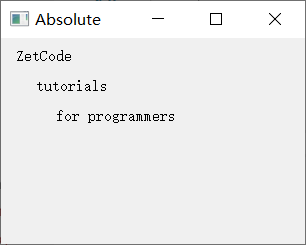
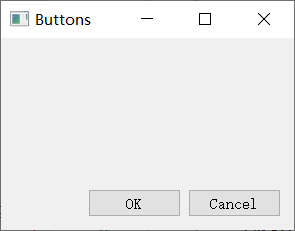
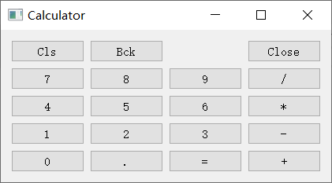
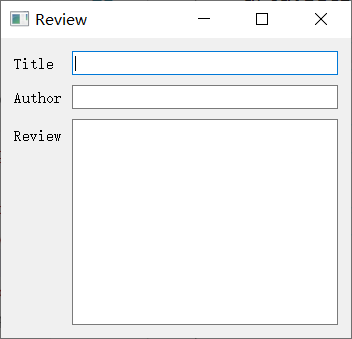

翻译自原文：Layout management in PyQt5
翻译时间 2020 年 8 月 19 日
布局管理是部件在应用程序窗口上的排放方式。我们可以使用绝对定位或布局类放置我们的部件。使用布局管理器管理布局是组织部件的首选方式。
绝对定位
程序员指定每个部件的位置和大小（以像素为单位）。当使用绝对定位时，我们必须了解以下限制：
- 如果我们调整窗口大小，部件的大小和位置不会改变
- 应用程序在各种平台上可能看起来不同
- 更改应用程序中的字体可能会破坏布局
- 如果我们决定改变我们的布局，我们必须完全重做我们的布局，这是乏味和耗时的
下面的示例将小部件定位在绝对坐标中。
absolute.py
import sys
from PyQt5.QtWidgets import QWidget, QLabel, QApplication
class Example(QWidget):
def __init__(self):
super().__init__()
self.initUI()
def initUI(self):
lbl1 = QLabel('ZetCode', self)
lbl1.move(15, 10)
lbl2 = QLabel('tutorials', self)
lbl2.move(35, 40)
lbl3 = QLabel('for programmers', self)
lbl3.move(55, 70)
self.setGeometry(300, 300, 250, 150)
self.setWindowTitle('Absolute')
self.show()
def main():
app = QApplication(sys.argv)
ex = Example()
sys.exit(app.exec_())
if __name__ == '__main__':
main()
|
我们使用move()方法来定位我们的部件。在我们的案例中，这些是标签。我们通过提供 x 和 y 坐标来定位它们。坐标系的开头位于左上角。x 值从左到右增长。y 值从上到下增长。
lbl1 = QLabel('ZetCode', self)
lbl1.move(15, 10)
|
标签小部件位于x=15和y=10。

图：绝对定位
PyQt5 QHBoxLayout
QHBoxLayout和QVBoxLayout是水平和垂直排列部件的基本布局类。
假设我们想要在右下角放置两个按钮。要创建这样的布局，我们使用一个水平和一个垂直框。为了创造必要的空间，我们增加了一个拉伸因子。
box_layout.py
import sys
from PyQt5.QtWidgets import (QWidget, QPushButton,
QHBoxLayout, QVBoxLayout, QApplication)
class Example(QWidget):
def __init__(self):
super().__init__()
self.initUI()
def initUI(self):
okButton = QPushButton("OK")
cancelButton = QPushButton("Cancel")
hbox = QHBoxLayout()
hbox.addStretch(1)
hbox.addWidget(okButton)
hbox.addWidget(cancelButton)
vbox = QVBoxLayout()
vbox.addStretch(1)
vbox.addLayout(hbox)
self.setLayout(vbox)
self.setGeometry(300, 300, 300, 150)
self.setWindowTitle('Buttons')
self.show()
def main():
app = QApplication(sys.argv)
ex = Example()
sys.exit(app.exec_())
if __name__ == '__main__':
main()
|
该示例将两个按钮放在窗口的右下角。当我们调整应用程序窗口的大小时，它们会留在那里。我们同时使用HBoxLayout 和 QVBoxLayout。
okButton = QPushButton("OK")
cancelButton = QPushButton("Cancel")
|
在这里，我们创建两个按钮。
hbox = QHBoxLayout()
hbox.addStretch(1)
hbox.addWidget(okButton)
hbox.addWidget(cancelButton)
|
我们创建一个水平框布局，并添加拉伸因子和两个按钮。拉伸在两个按钮之前添加一个可拉伸的空间。这会将它们推到窗口的右侧。
vbox = QVBoxLayout()
vbox.addStretch(1)
vbox.addLayout(hbox)
|
水平布局将放入垂直布局中。垂直框中的拉伸系数将按带有按钮的水平框到窗口的底部。
最后，我们设置了窗口的主布局。

图：按钮
PyQt5 QGridLayout
栅格布局类QGridLayout是最通用的布局类。它将空间划分为行和列。
calculator.py
import sys
from PyQt5.QtWidgets import (QWidget, QGridLayout,
QPushButton, QApplication)
class Example(QWidget):
def __init__(self):
super().__init__()
self.initUI()
def initUI(self):
grid = QGridLayout()
self.setLayout(grid)
names = ['Cls', 'Bck', '', 'Close',
'7', '8', '9', '/',
'4', '5', '6', '*',
'1', '2', '3', '-',
'0', '.', '=', '+']
positions = [(i, j) for i in range(5) for j in range(4)]
for position, name in zip(positions, names):
if name == '':
continue
button = QPushButton(name)
grid.addWidget(button, *position)
self.move(300, 150)
self.setWindowTitle('Calculator')
self.show()
def main():
app = QApplication(sys.argv)
ex = Example()
sys.exit(app.exec_())
if __name__ == '__main__':
main()
|
在我们的示例中，我们创建一个按钮网格。
grid = QGridLayout()
self.setLayout(grid)
|
创建QGridLayout的实例并设置为应用程序窗口的布局。
names = ['Cls', 'Bck', '', 'Close',
'7', '8', '9', '/',
'4', '5', '6', '*',
'1', '2', '3', '-',
'0', '.', '=', '+']
|
这些是以后用于按钮的标签。
positions = [(i,j) for i in range(5) for j in range(4)]
|
我们创建网格中的位置列表。
for position, name in zip(positions, names):
if name == '':
continue
button = QPushButton(name)
grid.addWidget(button, *position)
|
创建按钮并使用addWidget()方法将按钮添加到布局中。

图：计算器骨架
Review 示例
部件可以跨越网格中的多个列或行。在下面的示例中，我们说明了这一点。
review.py
import sys
from PyQt5.QtWidgets import (QWidget, QLabel, QLineEdit,
QTextEdit, QGridLayout, QApplication)
class Example(QWidget):
def __init__(self):
super().__init__()
self.initUI()
def initUI(self):
title = QLabel('Title')
author = QLabel('Author')
review = QLabel('Review')
titleEdit = QLineEdit()
authorEdit = QLineEdit()
reviewEdit = QTextEdit()
grid = QGridLayout()
grid.setSpacing(10)
grid.addWidget(title, 1, 0)
grid.addWidget(titleEdit, 1, 1)
grid.addWidget(author, 2, 0)
grid.addWidget(authorEdit, 2, 1)
grid.addWidget(review, 3, 0)
grid.addWidget(reviewEdit, 3, 1, 5, 1)
self.setLayout(grid)
self.setGeometry(300, 300, 350, 300)
self.setWindowTitle('Review')
self.show()
def main():
app = QApplication(sys.argv)
ex = Example()
sys.exit(app.exec_())
if __name__ == '__main__':
main()
|
我们创建一个窗口，其中我们有三个标签，两个行编辑和一个文本编辑小部件。布局使用QGridLayout。
grid = QGridLayout()
grid.setSpacing(10)
|
我们创建网格布局并在部件之间设置间距。
grid.addWidget(reviewEdit, 3, 1, 5, 1)
|
如果我们向网格添加部件，我们可以提供部件的行范围和列范围。在我们的案例中，我们使reviewEdit部件跨越 5 行。

图：查看示例
PyQt5 教程的这一部分专门介绍布局管理。